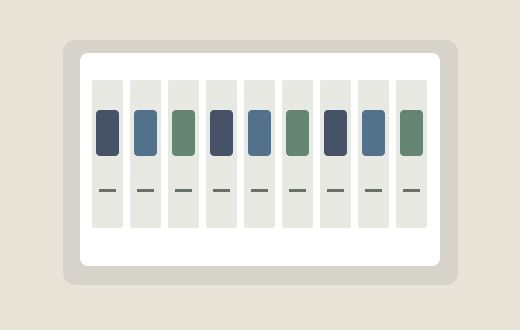
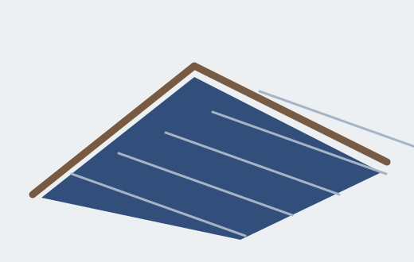
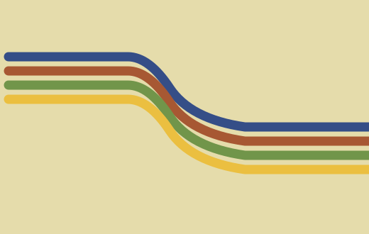

برقکشی ساختمان
طراحی مسیر، نصب تجهیزات و مستندسازی مدارها.
برق ساختمان، سیستم روشنایی و انرژی خورشیدی برای خانه، کارگاه و فضای تجاری.

طراحی مسیر، نصب تجهیزات و مستندسازی مدارها.
تعویض خطوط فرسوده با برنامهٔ مشخص برای هر اتاق.
بررسی انشعاب و پیشبینی محل نصب.
سناریوهای روشنایی و کنترل تجهیزات.
چیدمان پنل و بررسی نیاز مصرفی.
کنترل تجهیزات حفاظتی و ثبت وضعیت تابلو.
از فضای کار و نیازهای شما شروع میکنیم.
زمانبندی، فهرست تجهیزات و مراحل اجرا را میفرستیم.
پس از اجرا نتیجه را با هم مرور میکنیم.


برای بازدید، زمان پیشنهادیات را در فایل درخواست مشخص کن.
پلان یا توضیح کوتاهی از فضای کار، تعداد اتاقها و تجهیزات مورد نیاز را آماده کن.
 انتخاب این قالب
انتخاب این قالب